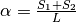
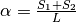
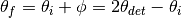
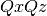

This document explains set up of reflectometry instruments at ISIS and how Mantid is used to perform reduction of ISIS reflectometry data.
Reflectometry is a non-invasive technique that allows us to analyse the properties of planar media and surfaces such as biological and metallic thin films.
Interfaces and surfaces are scientifically crucial as they allow symmetry breaking, leading too many novel and interesting phenomena, such as ferroelectricity, wetting, adhesion and superconductivity. Interfaces are also critical in governing many important chemical and biological processes such as corrosion, catalysis and how cell membranes and antimicrobials work. Reflectivity is unique in its ability to probe buried interfaces while still providing the ensemble average of the properties of these buried interfaces. Most other probes are surface limited and local in nature.
Reflectivity occurs whenever there is an equivalent refractive index change across a material boundary/interface; this is analogous to how light (travelling through air) reflects off the surface of water (our interface of interest). As a result it is very sensitive to the structural/magnetic profile of interfaces. Reflectivity allows the structural, sometimes called “nuclear”, scattering length density (SLD) depth profile to be obtained via a modelling and iterative fitting process. The SLD profile is the important piece of information that the reflectivity technique provides.
To obtain the SLD profile, a model of the sample is used to create an initial SLD profile that via a fast Fourier transform is turned into a reflectivity curve. This curve is then compared to the actual reflectivity data curve. The iterative fitting procedure is used to modify the initial model and SLD profile until the generated reflectivity matches, to some goodness of fit metric, the actual data. Then end result being the final SLD profile.
Assuming the most common model and parametrisation type, based on layers, then the SLD can then be deconvolved into a series of layers each with three fundamental properties: (1) The structural layer thicknesses, (2) interface roughness/grading (3) density/composition. These three properties can be linked back to a wealth of technological and scientifically relevant phenomena. Further to this, by polarising the incident neutron beam the magnetic equivalents of the above can also be obtained. It is also important to note that there are other models and parameterisation schemes that can be used, to generate SLD profiles.
A reflectivity measurement is made by shining a collimated beam (low angular divergence) of neutrons onto a flat surface and the reflected intensity is measured as a function of angle and neutron wavelength. Reflectivity has two fundamental modes of operation. (1) Monochromatic (angle dispersive, fixed incident wavelength) and chromatic (wavelength dispersive, fixed angle). (2) Chromatic is usually referred to as Time of Flight ( ) and is the primary mode of operation on all the ISIS reflectometers and what is referred to throughout this document.
) and is the primary mode of operation on all the ISIS reflectometers and what is referred to throughout this document.
Further to this, there are two geometric modes of operation. By far the most common is specular reflectivity. In this case the angle of incidence is equal to the angle of reflection or  . This is called the specular condition. It provides the SLD profile/information that is directly normal or perpendicular to the surface of the sample. Secondly there is off-specular reflectivity where the angle of incidence is not equal to the angle of reflection or
. This is called the specular condition. It provides the SLD profile/information that is directly normal or perpendicular to the surface of the sample. Secondly there is off-specular reflectivity where the angle of incidence is not equal to the angle of reflection or  . This provides structural information in the plane of the sample.
. This provides structural information in the plane of the sample.
As a quick aside it is worth mentioning that there is an added complication in describing scattering geometries in that different techniques, sources and institutions use different notations for the same things. For instance the specular condition can also be referred to as the  (where
(where  is the scattering/detector angle and
is the scattering/detector angle and  the sample angle) or
the sample angle) or  (where is not the scattering/detector angle and
(where is not the scattering/detector angle and  the sample angle) conditions. At ISIS reflectometers for historic reasons the detector angle is referred to as and the sample angle as
the sample angle) conditions. At ISIS reflectometers for historic reasons the detector angle is referred to as and the sample angle as  .
.
For more information, see the ISIS website.
The main components in the instrument are shown below:

The basic reflectometry instrument setup as used on the Inter, Crisp and Surf beamlines. The black line is the incident beam and the red line the reflected beam. The dotted black line is the horizon of the sample which is at an angle  with respect to the incident beam. There are several caveats; the diagram depicts what happens with the 1D linear detectors’ on Inter, Crisp and Surf. In the case of the 0D point detectors on these beamlines the detector changes angle such that the beam is always perpendicular incident on the 0D detector surface. On Polref and Offspec, the detector plane rotates with the detector angle such that the beam is always perpendicular incident on the detector plane whether it is a 0D, 1D or 2D detector. This needs to be taken account of in the IDF depending on the beamline and detector in use.
with respect to the incident beam. There are several caveats; the diagram depicts what happens with the 1D linear detectors’ on Inter, Crisp and Surf. In the case of the 0D point detectors on these beamlines the detector changes angle such that the beam is always perpendicular incident on the 0D detector surface. On Polref and Offspec, the detector plane rotates with the detector angle such that the beam is always perpendicular incident on the detector plane whether it is a 0D, 1D or 2D detector. This needs to be taken account of in the IDF depending on the beamline and detector in use.
 of the beamline via the collimation equation , where
of the beamline via the collimation equation , where  are the widths of the slit gaps and
are the widths of the slit gaps and  is the distance between Slit 1 and Slit 2. The resolution is often defined as
is the distance between Slit 1 and Slit 2. The resolution is often defined as  , where
, where  is the momentum transfer. Please see the NRCalculateSlitResolution v1 algorithm for more details. is referred to as the scattering angle rather than . We define three types of general geometry of detector:: the incident angle, that is, the angle between the incident beam and the sample, commonly called the sample angle or at ISIS reflectometers the axis.
is the momentum transfer. Please see the NRCalculateSlitResolution v1 algorithm for more details. is referred to as the scattering angle rather than . We define three types of general geometry of detector:: the incident angle, that is, the angle between the incident beam and the sample, commonly called the sample angle or at ISIS reflectometers the axis. : the final angle, that is, the angle between the reflected beam and the sample. At ISIS reflectometers this is referred to as . In specular reflection, and in off-specular analysis
: the final angle, that is, the angle between the reflected beam and the sample. At ISIS reflectometers this is referred to as . In specular reflection, and in off-specular analysis  .
.In addition, some instruments also use:
The main reduction algorithm is ReflectometryReductionOneAuto v3, which can be used from a python script or via the ISIS Reflectometry Interface. It currently only deals with specular reflection, but off-specular analysis is planned. It also currently only deals with point detectors or linear detectors, but 2D detectors are planned.
In an experiment, the reflected intensity,  (i.e. the number of neutrons received at the detector) is measured as a function of time-of-flight, . The desired outcome of the reduction is a one-dimensional plot (summed over the detectors) of reflectivity normalised by an un-reflected beam,
(i.e. the number of neutrons received at the detector) is measured as a function of time-of-flight, . The desired outcome of the reduction is a one-dimensional plot (summed over the detectors) of reflectivity normalised by an un-reflected beam,  against momentum transfer, . is referred to as reflectivity and is dimensionless and by definition. Total reflection, below the critical edge is then by definition
against momentum transfer, . is referred to as reflectivity and is dimensionless and by definition. Total reflection, below the critical edge is then by definition 
To achieve this, the input workspace in is first converted to wavelength,  , and normalised by some combination of monitors and direct beam transmission runs, that have all also been converted to . It is critical that the detector and monitor workspaces all have the same binning regarding number of bins and bin size in .
, and normalised by some combination of monitors and direct beam transmission runs, that have all also been converted to . It is critical that the detector and monitor workspaces all have the same binning regarding number of bins and bin size in .
The workspace is summed over all detectors in the region of interest, using either constant- or constant- binning. The result is a one-dimensional array of against . The summed workspace is converted to and rebinned to the required resolution, as determined either by the slits or the user. The NRCalculateSlitResolution v1 algorithm is used to calculate the slit resolution.
The resulting one-dimensional plot of against is typically referred to as IvsQ. ReflectometryReductionOneAuto v3 also outputs the unbinned workspace in , as well as the summed workspace in , and these are typically referred to as IvsQ_unbinned and IvsLam respectively.
A standard measurement will involve sample under certain conditions (temperature, magnetic field, etc) being measured at two or three different incident angles, . This means that we typically end up with two or three workspaces that are combined (stitched) and processed to give a single plot covering a larger range of . The stitching is achieved using the Stitch1D v3 and Stitch1DMany v1 algorithms.
The actual reduction is relatively simple and produces a simple one dimensional plot which can be saved as an ASCII file. However, there can be many files to deal with and we need to make sure that we process the correct runs together and with the correct parameters, transmission runs etc.
If the divergence of the input beam is significant, we need to take the variability in and into account. Consider a range of incident angles on a sample of fixed orientation:

A range of incident angles from a divergent beam on a sample of fixed orientation . The black lines show the expected beam and reflection directions, and the red lines show a divergent beam path and reflection.
The difference between the actual and expected beam directions is the same as that between the actual and expected reflection directions:

Therefore, can be calculated as:

The effect of the divergence is that the data follow lines of constant-. Therefore we need to sum along lines of constant- rather than constant-. ReflectometryReductionOneAuto v3 has an option to do this.

Measured intensity for each detector vs . The data follow lines of constant .

The reduced data as a plot of vs , showing the improved resolution when summing in rather than
A bent sample causes variability in the reflected angle, . It can be considered as a flat sample of variable orientation:

Divergence in the reflected angle from a non-flat sample is considered as a flat sample of variable orientation. The black lines show the incident beam and the expected reflection direction with the sample horizon at . The red line shows a divergent reflected beam, and the dotted blue line shows the related sample horizon.
The difference between the actual and expected reflection directions is:
Therefore, can be calculated as:

Similarly to the divergent beam case, the data should be summed along lines of constant- using the relevant options in ReflectometryReductionOneAuto v3.
There are five reflectometry instruments at ISIS:
Currently at ISIS we deal with two types of detector: point-detectors (e.g. Inter) or multi-/linear-detectors (e.g. Polref and Offspec). Note that most instruments have both point and linear detectors. We are expecting to add 2D detectors in the near future.
Because runs are performed at different incident angles, the detectors are moved between different runs. Some instruments (e.g. Inter) move detectors vertically, whereas others (Polref, Offspec) rotate them around the sample.
Historically, detector positions needed to be adjusted within the reflectometry reduction algorithms. The SpecularReflectionPositionCorrect v2 algorithm deals with this. However, some instruments (e.g. Inter) now move detectors to the correct position on load, so correcting positions within the reflectometry algorithms is not required. This is the preferred approach going forward.
Mantid can handle instruments with different reference frames because it uses the beam direction, sample position, detector positions, etc. The reference frames currently used by ISIS reflectometry instruments are:
 axis and Up (perpendicular to the beam) along the
axis and Up (perpendicular to the beam) along the  axis.
axis. axis and Up along the axis.
axis and Up along the axis.The way in which components are arranged in the IDF is different. Some instruments, such as Offspec, have a component “DetectorBench” that is the parent component of all the detectors. Others don’t have this component. This has to be taken into account when moving detectors.
Some of the instrument IDFs are set up such that detectors are at the correct position on loading a run. Some instruments are not be set up to do this yet, so ReflectometryReductionOneAuto v3 has an option to correct detector positions using another algorithm, SpecularReflectionPositionCorrect v2. It is important that the detectors are in the correct position in order for Mantid algorithms to produce the correct results, otherwise some calculations (e.g. the conversion from to ) will be wrong. There are plans to try and harmonise the IDF’s as much as possible.
The main reduction algorithm is ReflectometryReductionOneAuto v3. This sets a lot of the input properties from defaults in the instrument parameter file. It must also populate some input properties so that they can be updated in the GUI (this has to work both for single period datasets and multi period datasets). This algorithm is a wrapper around ReflectometryReductionOne v2, which actually does the work. This arrangement seems to be unusual in Mantid.
SpecularReflectionPositionCorrect v2 can be used to correct detector positions if they are not at the correct position when loaded. It can shift them vertically or rotate then around the sample position. This algorithm is called as a child by ReflectometryReductionOneAuto v3.
Related to ReflectometryReductionOne v2 and ReflectometryReductionOneAuto v3 we also have CreateTransmissionWorkspace v2 and CreateTransmissionWorkspaceAuto v2, which converts transmission run(s) to wavelength and stitches transmission runs together when two are provided.
Stitch1DMany v1 does the work to stitch multiple runs together, which is quite a complicated operation.
ConvertToReflectometryQ v1: This algorithm is generally used to examine off-specular scattering. The input is a workspace in wavelength, and the output is a  map (or  or
or  ). It doesn’t normalize by monitors, transmission run, etc (in fact, scientists typically run ReflectometryReductionOneAuto v3 prior to running this algorithm, so that they obtain the normalized intensity). This algorithm is generally used to examine off-specular scattering.
). It doesn’t normalize by monitors, transmission run, etc (in fact, scientists typically run ReflectometryReductionOneAuto v3 prior to running this algorithm, so that they obtain the normalized intensity). This algorithm is generally used to examine off-specular scattering.
The ISIS Reflectometry Interface provides a graphical front-end for the ReflectometryReductionOneAuto v3 algorithm. It includes the facility to:
See the full documentation for more information.
Note that the main table on the Runs tab is designed to be a generic batch-processing table which can be customised and re-used for other technique areas in their own interfaces. The table and interface are both tested in unit tests using gmock. The interface uses the MVP pattern at different levels and communication happens between presenters.
Note that the current interface replaces the ISIS Reflectometry (Old) interface, which was written in Python and had several limitations, including lack of automated testing. The old interface will shortly be removed.
Category: Techniques